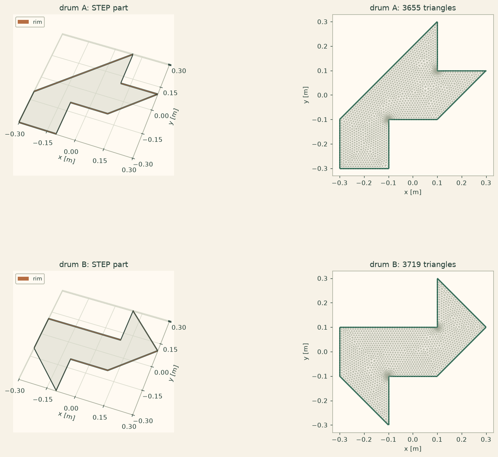

Docs › Examples › Isospectral drums
Membrane eigenmodes · 2D
Isospectral drums
The two eight-sided drumheads of Gordon, Webb and Wolpert: different shapes with exactly the same pitches.
Run locally with OneSimulation. The example downloads are free. Running them requires an activated runtime. Runtime Alpha 0.2.1a7 · CPython 3.13 on macOS (Apple Silicon), Ubuntu 22.04 (x86-64), and Windows x64. Installation and activation · View pilot plans. Scope of the reference checks.

What it computes
OneSimulation reads both drums from STEP files, cuts their cross-sections and meshes them with quadratic triangles graded towards the re-entrant corners. The Helmholtz pressure forms give the membrane stiffness and mass, the clamped rim is a restriction of the pressure pencil, and the spectrum provider returns the lowest ten modes of each drum. The script that builds the STEP file comes with the notebook.
What it checks
All ten eigenvalues of both drums agree with Driscoll's twelve-digit values to better than 1e-5 (largest deviation 6.7e-6 for drum A and 8.8e-6 for drum B on the finest mesh), the two spectra agree with each other to 2e-6, and the error falls from 2.7e-3 to 6.7e-6 over four meshes.
Geometry
The notebook starts at the import of the CAD files isospectral_drums.step, isospectral_drums_twin.step: STEP (AP242), readable by any CAD program, with the names of the faces that the boundary conditions use. Put them next to the notebook.


The geometry script
The script isospectral_drums_geometry.py builds the geometry with the CAD objects of OneSimulation and writes the files. Change a dimension there, run it, and run the notebook again.
"""Geometry of the OneSimulation example "Isospectral drums".
Builds the two drumheads of Gordon, Webb and Wolpert as thin plates with the CAD objects of
OneSimulation: polygons with eight sides, each made of seven right isosceles triangles with legs of
0.2 m. The first drum is written to isospectral_drums.step, the second to
isospectral_drums_twin.step; in both files the side faces are named rim.
"""
from onesim.cad.d2 import Path, Profile, Segment
from onesim.cad.d3 import Prism
unit, thickness = 0.1, 0.01
outlines = {
"isospectral_drums": [
(-3, -3),
(-3, -1),
(1, 3),
(1, 1),
(3, 1),
(1, -1),
(-1, -1),
(-1, -3),
],
"isospectral_drums_twin": [
(-3, 1),
(1, 1),
(1, 3),
(3, 1),
(1, -1),
(-1, -1),
(-1, -3),
(-3, -1),
],
}
for name, corners in outlines.items():
points = [(unit * x, unit * y) for x, y in corners]
drum = Prism(
profile=Profile(
Path(points[0], tuple(Segment(p) for p in points[1:] + points[:1]))
),
height=thickness,
)
drum = drum.grouped(
rim=drum.select(
faces=lambda face: face.kind == "plane" and abs(face.normal[2]) < 1e-9
)
)
drum.save(f"{name}.step")The notebook
The complete notebook, cell by cell. Run it to produce the figures and the comparison printout.
A stretched membrane with tension \(T\) (N/m) and areal density \(\sigma\) (kg/m²), clamped along its rim, vibrates in modes \(w(\mathbf x)\,e^{i\omega t}\) that solve the Helmholtz eigenproblem
The eigenvalues \(\lambda=\omega^2\sigma/T\) are what the ear hears. In 1966 Mark Kac asked whether they determine the shape of the drum (Amer. Math. Monthly 73, 1966). The answer came in 1992: C. Gordon, D. Webb and S. Wolpert (Invent. Math. 110, 1992) found two different polygons with identical spectra. Each is made of seven copies of a right isosceles triangle, glued in two different ways.
| boundary | condition |
|---|---|
| rim of each drum | clamped, \(w=0\) |
Reference. T. A. Driscoll, "Eigenmodes of isospectral drums", SIAM Review 39, 1-17 (1997), computed the first eigenvalues of this pair to twelve digits with a domain-decomposition method that resolves the corner singularities exactly. In the scale where the shortest horizontal and vertical sides have length 2, they are \(\lambda_1=2.53794399980\), \(\lambda_2=3.65550971352\), ...; the ninth is \(5\pi^2/4\) exactly. The drums here are drawn with that unit set to 0.1 m.
The membrane equation is the same Helmholtz operator as linear acoustics, so OneSimulation's pressure forms solve it directly: the tension takes the place of the inverse density and the areal density the place of the compressibility.
import numpy as np
from onesim.cad.exchange import load
from onesim.meshing import TriangularMesher
from onesim.numerics.fem import FiniteElement, Lagrange
from onesim.numerics.linear import SparseSymmetricEigenSolver
from onesim.physics.acoustics import (
AcousticPressureSpectrum,
ComplexPressurePencil,
ConstantPressureForms,
SampledPressureVolumeForms,
pressure_space_volume_samples,
)
from onesim.visualization import plots, theme
theme.set()
tension, areal_density, unit = 1500.0, 0.26, 0.1
driscoll = np.array(
[
2.53794399980,
3.65550971352,
5.17555935622,
6.53755744376,
7.24807786256,
9.20929499840,
10.5969856913,
11.5413953956,
12.3370055014,
13.0536540557,
]
)
mode_count = len(driscoll)Geometry and mesh
load reads the two drums, thin plates written by isospectral_drums_geometry.py; section cuts each at half thickness. Both have re-entrant corners of 270° at \((\pm0.1, \pm0.1)\) m, where the modes have a singular gradient. The size_field of the triangle mesher shrinks the elements towards these two points, from the target size down to a twentieth of it.
drums = {
"drum A": load("isospectral_drums.step"),
"drum B": load("isospectral_drums_twin.step"),
}
heads = {
name: drum.section((0, 0, 1), origin=(0, 0, 0.005)) for name, drum in drums.items()
}
corners = unit * np.array([[1.0, 1.0], [-1.0, -1.0]])
mesh_of = lambda head, h: TriangularMesher(
target_size=h,
size_field=lambda p: np.minimum(
h,
h / 20 + 0.3 * np.min(np.linalg.norm(p[:, None, :2] - corners, axis=2), axis=1),
),
).generate(head)
sizes = (0.04, 0.02, 0.01, 0.005)
meshes = {(name, h): mesh_of(head, h) for name, head in heads.items() for h in sizes}
view = plots.Camera(elevation=55, azimuth=-70)
fig = plots.figure(2, 2, size=(13, 11))
for row, (name, drum) in enumerate(drums.items()):
plots.geometry(
drum,
selection={"rim": drum.boundaries.rim},
labels=False,
camera=view,
title=f"{name}: STEP part",
ax=fig[2 * row],
)
plots.mesh(
meshes[name, 0.01],
groups=("all",),
legend=False,
title=f"{name}: {meshes[name, 0.01].cell_count} triangles",
ax=fig[2 * row + 1],
)
plots.show()Model
Quadratic Lagrange elements; SampledPressureVolumeForms integrates the stiffness \(\int T\,\nabla\phi_i\cdot\nabla\phi_j\) and the mass \(\int\sigma\,\phi_i\phi_j\). The clamped rim removes its nodes through the restriction of the ComplexPressurePencil, and AcousticPressureSpectrum returns the lowest ten modes from a shift-and-invert Lanczos solver.
solver = SparseSymmetricEigenSolver()
def solve_drum(name, h):
"""Lowest modes of one drum on the mesh of size h."""
mesh = meshes[name, h]
space = FiniteElement(element=Lagrange(order=2)).bind_space(mesh)
stiffness, mass = SampledPressureVolumeForms(
size=space.dof_count,
samples=lambda: pressure_space_volume_samples(space),
inverse_density=lambda omega, sample: tension,
compressibility=lambda omega, sample: areal_density,
)(0.0)
free = np.setdiff1d(
np.arange(space.dof_count),
space.boundary_dofs(mesh.facets(heads[name].boundaries.all)),
)
pencil = ComplexPressurePencil(
ConstantPressureForms(stiffness, mass),
restrict=lambda matrix: matrix[free][:, free],
)
eigenpairs = lambda operator: (lambda values, vectors: (np.sqrt(values), vectors))(
*solver(
mass[free][:, free], operator(0.0).real, mode_count=mode_count, target=0.0
)
)
modes = AcousticPressureSpectrum(operator=pencil, eigensolver=eigenpairs).run()
shapes = np.zeros((space.dof_count, mode_count))
shapes[free] = modes.pressure_modes
return dict(
space=space,
mesh=mesh,
f=modes.eigenfrequencies,
shapes=shapes,
dofs=space.dof_count,
lam=modes.angular_frequencies**2 * areal_density / tension * unit**2,
)
runs = {(name, h): solve_drum(name, h) for name in heads for h in sizes}Results
Eigenvalues in Driscoll's scale, \(\lambda=\omega^2\sigma\,(0.1\,\mathrm m)^2/T\), on the finest mesh, the frequency of each mode for a drumhead of tension 1500 N/m and 0.26 kg/m², and the difference between the two drums.
finest = sizes[-1]
a, b = runs["drum A", finest], runs["drum B", finest]
print(f"finest meshes: drum A {a['dofs']} unknowns, drum B {b['dofs']} unknowns")
print(
" mode Driscoll drum A dev. A drum B dev. B |A-B|/A f [Hz]"
)
for k in range(mode_count):
print(
f"{k + 1:4d} {driscoll[k]:.10f} {a['lam'][k]:.10f} {a['lam'][k] / driscoll[k] - 1:+.1e} "
f"{b['lam'][k]:.10f} {b['lam'][k] / driscoll[k] - 1:+.1e} {abs(a['lam'][k] - b['lam'][k]) / a['lam'][k]:.1e}"
f" {a['f'][k]:7.2f}"
)
print(
f"ninth eigenvalue against 5 pi^2/4 = {5 * np.pi**2 / 4:.10f}: drum A {a['lam'][8] / (5 * np.pi**2 / 4) - 1:+.1e}, "
f"drum B {b['lam'][8] / (5 * np.pi**2 / 4) - 1:+.1e}"
)
print("\nlargest relative deviation from Driscoll over the ten modes")
for h in sizes:
print(
f"h = {100 * h:4.1f} cm: drum A {np.max(np.abs(runs['drum A', h]['lam'] / driscoll - 1)):.2e} "
f"({runs['drum A', h]['dofs']:6d} unknowns), drum B {np.max(np.abs(runs['drum B', h]['lam'] / driscoll - 1)):.2e} "
f"({runs['drum B', h]['dofs']:6d} unknowns)"
)Figure
The first three modes of both drums: the shapes differ, the pitches agree. Teal and copper are opposite signs of the displacement. Last row: convergence of the largest eigenvalue error with the number of unknowns.
fig = plots.figure(
layout=[["A0", "A1", "A2"], ["B0", "B1", "B2"], ["conv", "conv", "dev"]],
size=(18, 16),
)
for name, key in (("drum A", "A"), ("drum B", "B")):
run = runs[name, 0.01]
x, y = np.asarray(run["mesh"].coordinates).T
for k in range(3):
shape = np.asarray(
run["space"].evaluate(run["shapes"][:, k], run["mesh"].coordinates)
)
shape = shape / shape[np.argmax(np.abs(shape))]
plots.heatmap(
x,
y,
shape,
triangles=np.asarray(run["mesh"].cells),
colormap="diverging",
limits=(-1, 1),
label="w / max|w|",
title=f"{name}, mode {k + 1}: {run['f'][k]:.1f} Hz",
ax=fig[f"{key}{k}"],
)
plots.line(
y={
name: (
np.array([runs[name, h]["dofs"] for h in sizes]),
np.array(
[np.max(np.abs(runs[name, h]["lam"] / driscoll - 1)) for h in sizes]
),
)
for name in heads
},
markers=True,
scale="loglog",
xlabel="number of unknowns",
ylabel="largest relative eigenvalue error",
title="Convergence against Driscoll's eigenvalues",
ax=fig["conv"],
)
plots.line(
points={
name: (
np.arange(1, mode_count + 1),
np.abs(runs[name, finest]["lam"] / driscoll - 1),
)
for name in heads
},
scale="logy",
xlabel="mode number",
ylabel="relative eigenvalue error",
title=f"Finest meshes, h = {100 * finest:.1f} cm",
ax=fig["dev"],
)
plots.show()Going further
Change the outlines in isospectral_drums_geometry.py to another isospectral pair of Buser, Conway, Doyle and Semmler (Int. Math. Res. Notices 1994) and write the STEP files again. Or replace the clamped rim by a free one (drop the restriction): the Neumann spectra of the pair coincide as well.